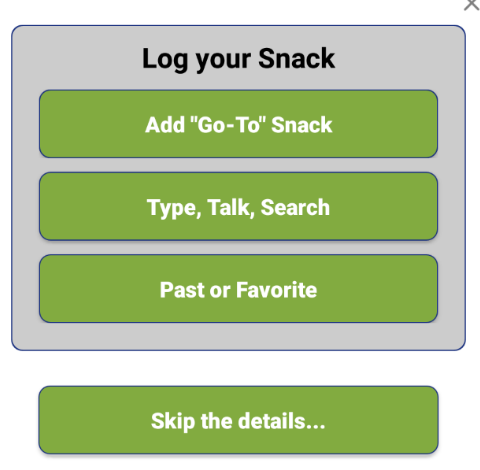
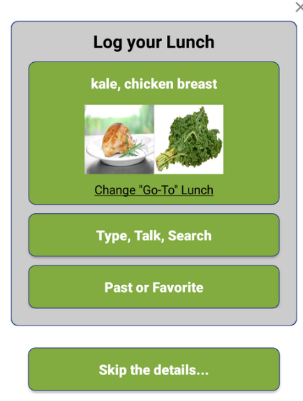
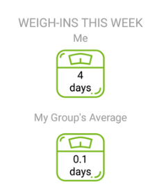
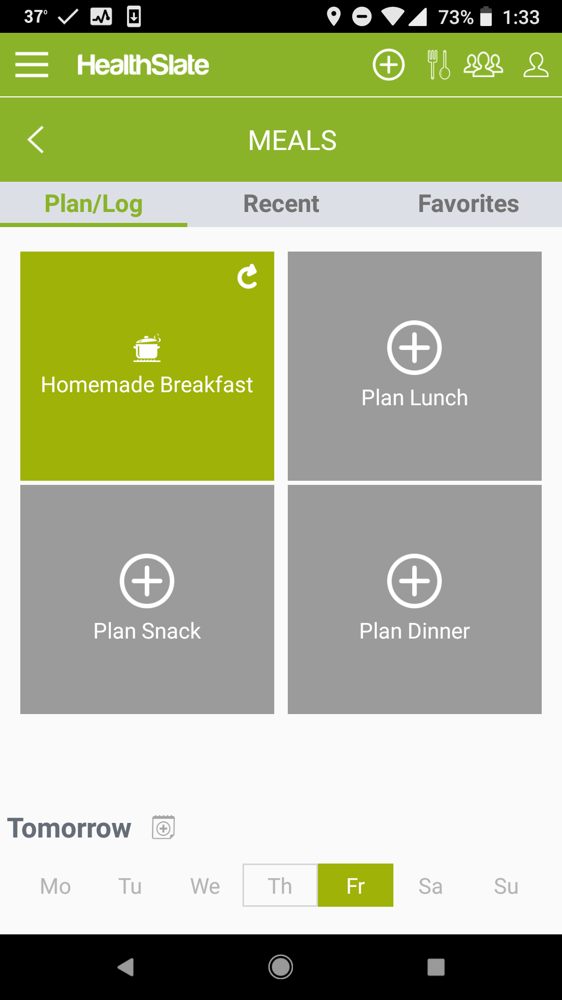
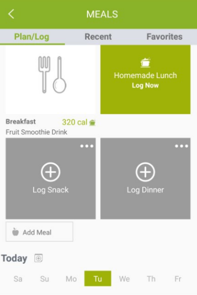
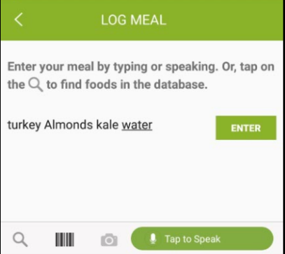
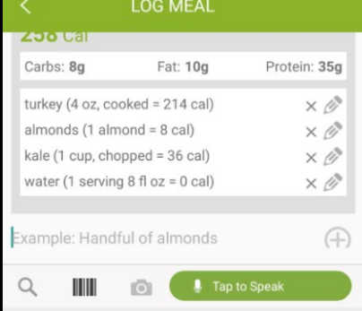
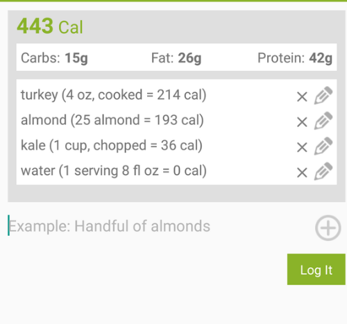
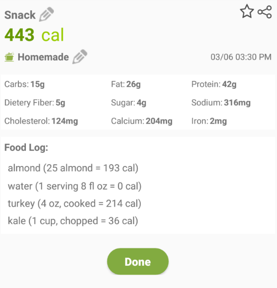

New Features!
- We call healthy meals that keep you full and that you can make a habit your “Go-To” meals. By “healthy,” we mean meals with Protein, Fiber and Healthy Fats like olive oil, nuts, seeds and avocados. Even saturated fats are OK in moderation, especially eggs. It means meals with less added sugar and other processed carbs. Our goal is for you to make those meals (not just eating them but also shopping for and preparing them) part of your weekly routine so that you don’t even need to think about them.
- Until you have set your Go-To meal, you will have a button that says "Add Go-To Meal"
- To Set your First "Go-To" meal, select the Add "Go-To" Meal button
- Once Your "Go-To" is set you will have a picture of that meal for a quick way to log your meal.
- You can change your Go-To meal by pressing the Change "Go-To" meal link and choosing a new "Go-To" meal.


- Meals you make at home, e.g., a lunch you make and bring to work, are usually healthier than pre-made meals like frozen dinners, and even those are healthier than what you’ll end up eating at most restaurants. If you want to find yourself less often at a fast food restaurant or eating a frozen pizza, it will help a lot to think about that BEFORE you are hungry and stressed out with no good alternatives.
- We provide a simple tool on the app’s Meals page called Choose Meal Source to help you do this basic planning.
- For each meal you can choose between Homemade, Store bought, or Dine out.
- If you plan a given meal and then later log what you actually did for that meal you will be able to see how often you are sticking to your plans on the Goals page.

- While your health coach is your primary partner in our program, your coach is only human so isn’t always immediately available.
- That’s where coach Leana comes in. Leana is a software based coach who is available 24/7 to answer heathy lifestyle and tech support related questions, such as:
- What are some healthy snack ideas?
- When does my Fitbit arrive?
- How much protein is in scrambled eggs
- How much protein should I get?

- Badges will appear on home screen
- If you weight in 5 days in a row the scale icon turns into Ribbon!

- Meal planning gives you the ability to plan the next few days meals ahead of time.
- To log a future meal, select a future day of the week at the bottom of the screen.
- Select the Plan Meal button.
- Select Homemade, Store bought, or Dine out.
- Select Save.

- Select the meal you would like to log: Breakfast, Lunch, Snack, Dinner.
- Choose your meal source. Select Homemade, Store bought, or Dine out.
- Choose how you would like to log your meal. “Go-to” meal, Type, Talk, Search, Past of Favorite or Skip the details…
- If you choose the "Go-To" meal or Skip the Details... you are already done!
Otherwise, if you are using Type, Take, Search, simply type the foods you want to add to your meal. You don’t need to put in commas. Just type them in and select Enter. - The food will be listed. If you want to change an item or quantity, press the pencil icon
 .
IF you wish to remove the item, press the x.
.
IF you wish to remove the item, press the x. - Edit the item, quantity, or unit. You can even edit the Calories, carbs, fat, and protein to suite your needs. Then select Save.
- Select Log It.
- Select Done





